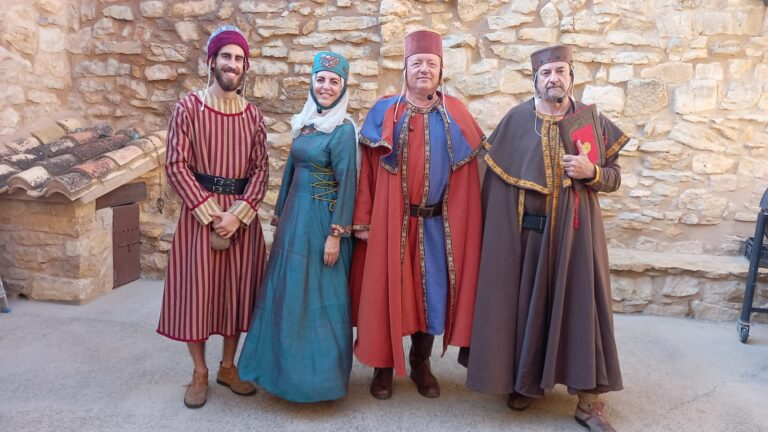
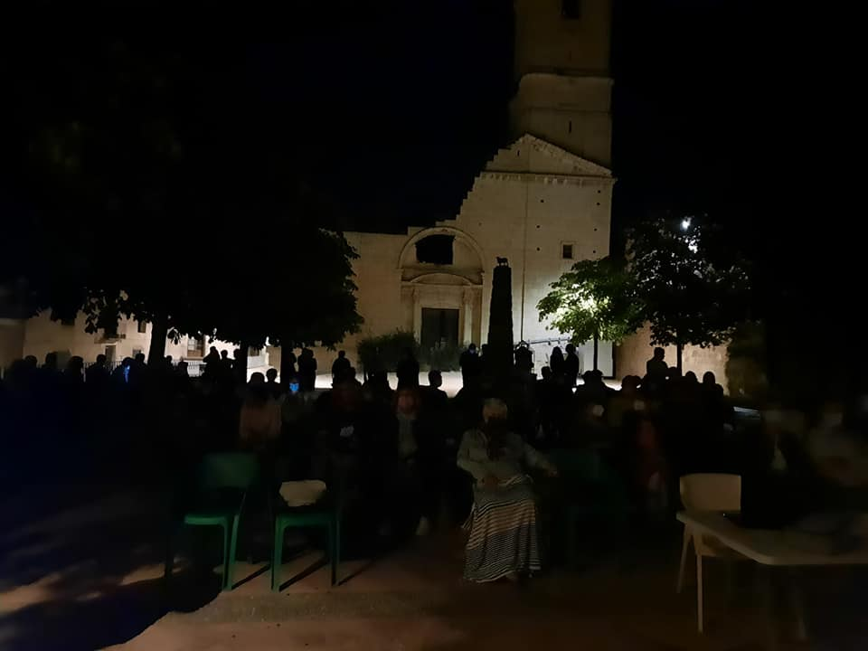
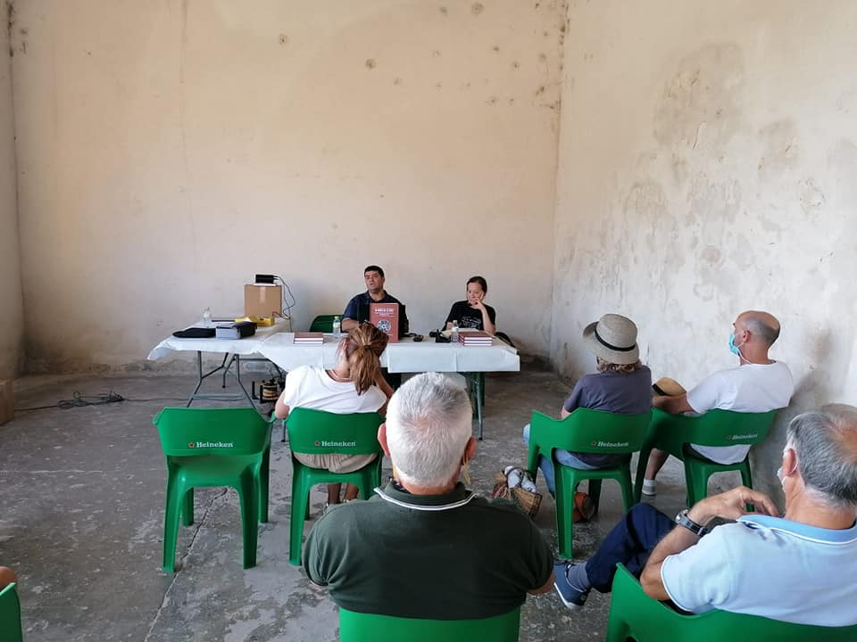
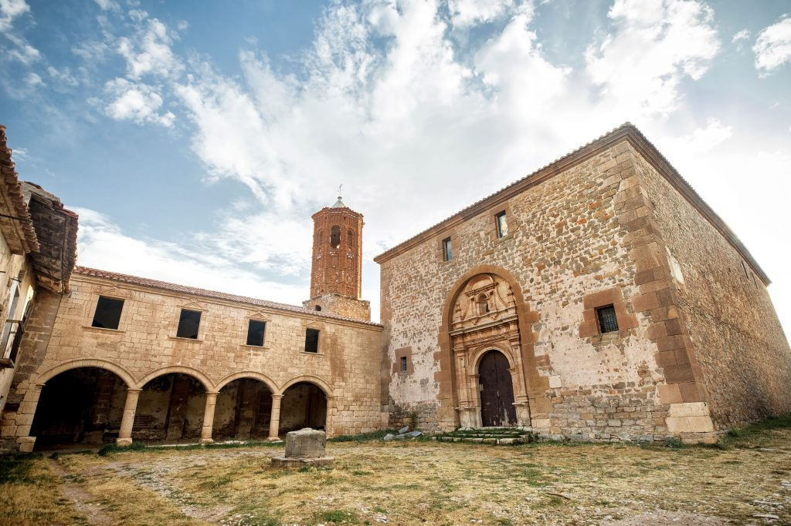

Próximas actividades

Tour histórico teatralizado
15 Diciembre, 2025
Se podrá seguir la historia de Camarillas interpretada en las calles.
Más sobre la actividad
Documental españa vaciada
10 Junio, 2026
Se presentará documental con foco principal en nuestro pueblo.
Más sobre la actividad
Presentación libro españa vaciada
12 Agosto, 2026
Presentación del libro “En busca de La Ferte”, un estudio del patrimonio abandonado de la provincia de Teruel.
Más sobre la actividadLa historia de nuestro pueblo

Camarillas no es solo un punto en el mapa, es un lugar que se vive más de lo que se cuenta. Desde dentro, el pueblo tiene un ritmo propio: el sonido del viento entre los pinos, el repique pausado de las campanas, las conversaciones que se alargan en la plaza cuando cae la tarde. Aquí el tiempo no corre, se desliza despacio, como si respetara la costumbre de no tener prisa.
Desde dentro, Camarillas no es un lugar olvidado. Es un refugio discreto, una memoria viva que sigue respirando entre sus piedras y su gente. Un recordatorio de que hay sitios que no necesitan cambiar para seguir teniendo sentido.
La vida en Camarillas está hecha de gestos pequeños: el saludo diario, el olor a leña en invierno, las casas que se abren de par en par cuando llegan las fiestas. En verano, el pueblo revive; las risas de los que vuelven llenan las calles, y durante unos días parece que todo regresa a ser como antes. Luego, cuando el silencio vuelve a ocupar su sitio, queda esa mezcla de melancolía y gratitud que solo se entiende si has crecido aquí o has pasado noches mirando las estrellas desde sus montes.
Únete a la asociación cultural Camerón
Puedes hacerte socio por 12€/año, haz click en el botón de abajo para enviarnos tu información
Únete a la asociación